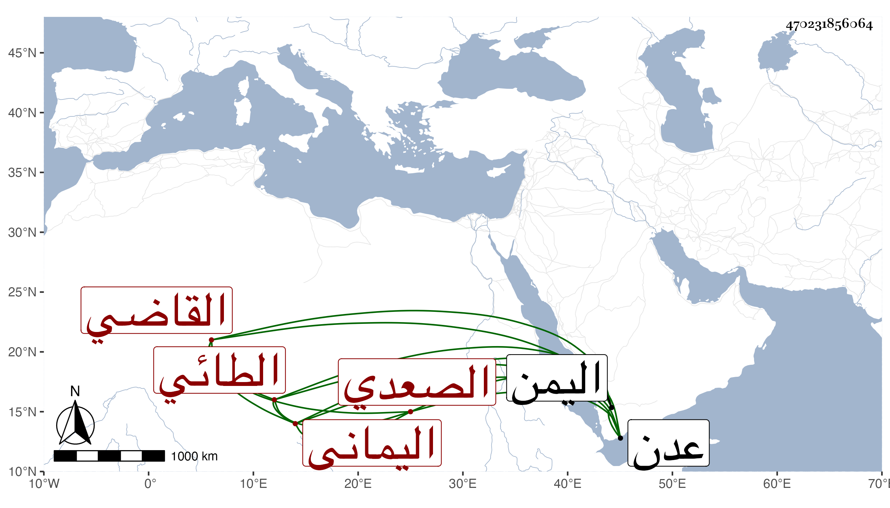

0902Sakhawi.DawLamic.ITO20230111-ara1.EIS1600.470231856064
Biography ID: 470231856064
138
علي بن يحيى القاضي نور الدين الطائي الصعدي اليماني والد عبد الرحمن ومحمد المذكورين في محليهما ويعرف بابن جميع بالتصغير . ذكره شيخنا في أنبائه وقال : أحد أعيان التجار باليمن ولاه الاشرف الأشراف على أمر المتجر بعدن ثم فوض إليه جميع أمورها فكان الأمير والناظر من تحت أمره ، وكان محبا للغرباء مفرطا في الإحسان إليهم محببا إلى الرعية زيدي المعتقد ولكنه يخفي ذلك ، اجتمعت به وسر بي كثيرا لأنه كان صديق خال قديما وبالغ في الإحسان إلي . مات في ليلة عيد الفطر سنة ثلاث وقد جاز الستين .
